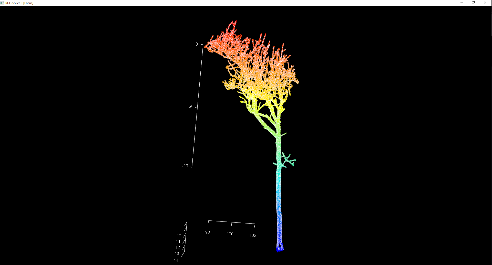

Análisis estructural de árbol individual (QSM + riesgo de ramas)
A partir de una nube de puntos TLS del bosque de Wytham reconstruí un modelo cuantitativo de estructura (QSM) con esqueletización, estimación de radios y jerarquía de ramas. Sobre ese modelo calculé el momento de flexión por rama y clasifiqué cada eje en un semáforo de prioridad (alta, media, baja) combinando momento de flexión, longitud y ángulo de inserción, exportando las ramas priorizadas para evaluación de riesgo.
